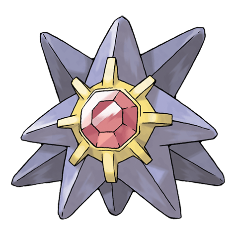

Назад
Старми

Старми — Покемон первого поколения под номером 121 в Покедекс. Обитает он в регионе Канто и относится к Водному и Психическому типу. Это последняя стадия эволюции Покемона Старью. Центральное ядро тела Старми ярко переливается всеми цветами радуги. Благодаря этой особенности его прозвали морской драгоценностью.
Тип:
Водяной
Психический
Эволюция
# 121 Старми
Финальная стадия